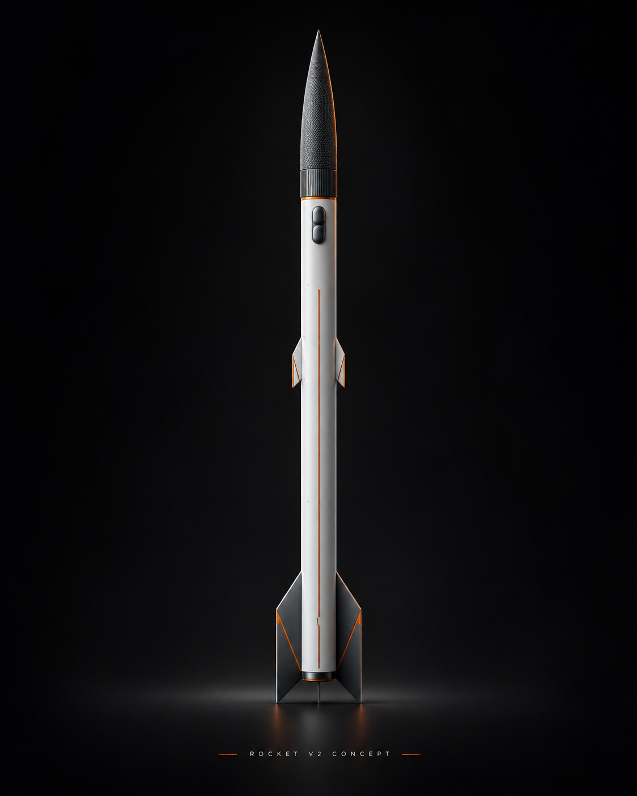
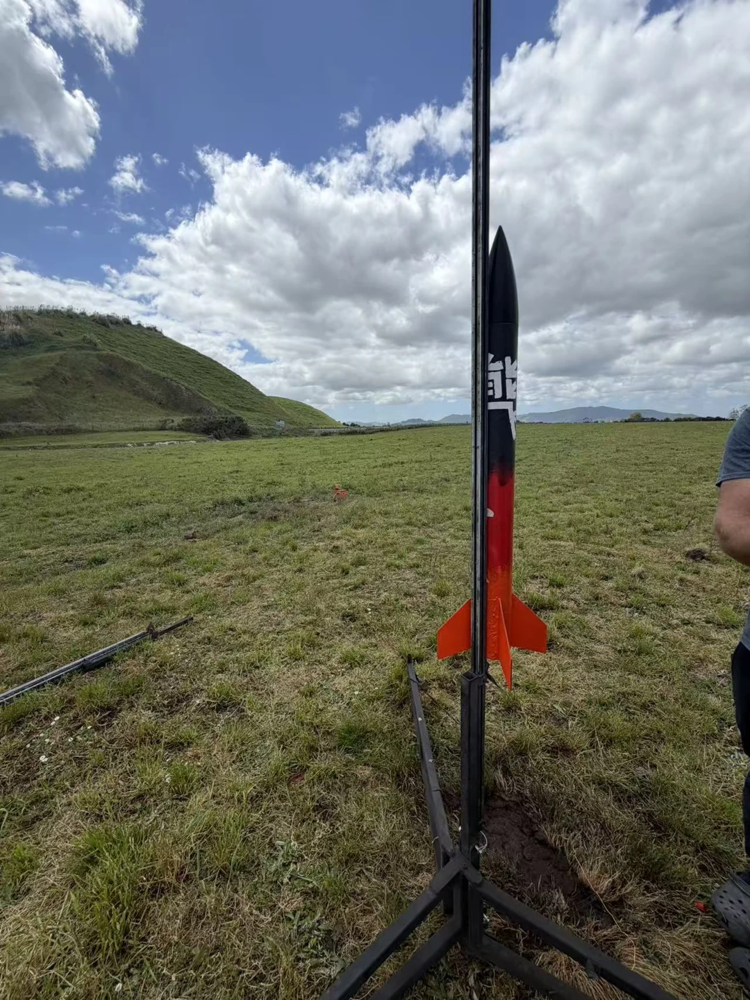
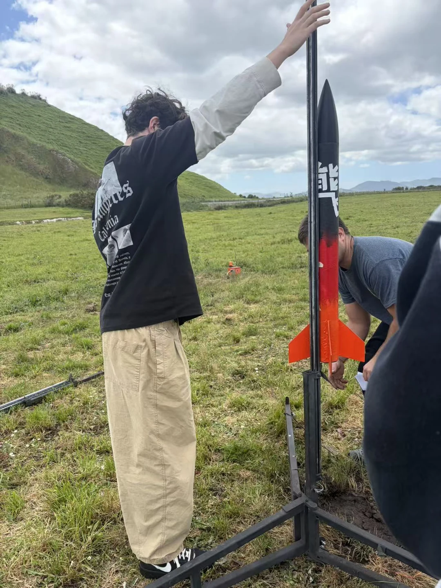
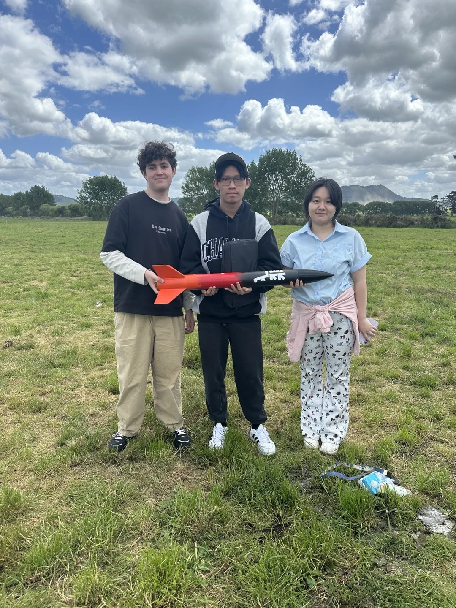

V1 achieved a reported 550 m altitude and Mach 0.4 peak speed. V2 is now in development, targeting 1,150 m and Mach 0.7.
STATUSV1 launched · V2 in development
V2 interactive concept

Rough V2 concept model based on the current I205W-14 design.
Altitude
550 m
Peak speed
Mach 0.4
Stability margin
1.8

The rocket on its launch rail.
Flight stability
Increasing the stability margin was a design priority. The configuration had a reported stability margin of 1.8.
Flight video
Footage from the Level 1 launch field.
Build and launch photos
Preparing the rocket at the workbench.

Setting up at the launch site.

The team with the rocket.
THE NEXT ITERATION · IN DEVELOPMENT
V2.
Development in progress
Building on the first launch, V2 is being developed around an I205W-14 rocket motor with a fully integrated onboard electronics package. The focus is to take the next step in performance while establishing an electronics platform for future iterations. The interactive model below shows the current rough V2 concept built around the I205W-14 design.
Target altitude1,150 mDesign goal · not yet flown
Target peak speedMach 0.7Design goal · not yet flown
MotorI205W-14Selected for V2
01 / V1
First flight
Launched. Reported 550 m altitude, Mach 0.4 peak speed and stability margin of 1.8.
02 / V2
Integrated electronics
Under development. Integrating onboard electronics into the rocket and working toward the higher flight targets above.
03 / V3
Active canards
Planned future iteration. Use the V2 electronics work as a foundation for an active-canard control concept.